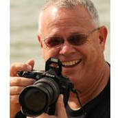

Stuart Carlson
Director and President
Stuart was raised in Peru as a third-generation missionary kid. In the late 1990s he and Ruth began partnering with Joi Ministries in Nigeria, later renamed Alternorm Ministries. In 2000 they formed Partners in Joy, Inc., in Duncanville, Texas, so they could communicate with partner ministries and receive and send support.